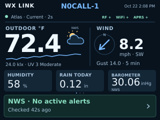

Atlas lightning · Original concepts
Selected: Option B with distance, five-second alternation and thirty-minute expiry.
Existing Home layout, with optional lightning information. Fictional readings and callsign; these are editable UI studies, not device captures. No firmware changes.
A · Contextual strip — recommended

Normally shows light/UV. When strikes are recent, that row shows a bolt, a ten-minute count and last detected event age. Barometer and the full NWS alert target remain.B · Optional lightning tile
For owners who prioritize lightning, an optional tile replaces Barometer while the sensor is configured and reporting. Without lightning capability it stays Barometer. Pressure remains on Outdoor/status. If a known sensor stops reporting, the tile explicitly says data old.Capability rule: Auto stays hidden unless the confirmed selected station actually reports supported lightning fields. A station name alone does not enable it. Missing is not zero. A new counter is a baseline, not a new strike; zero in the last ten minutes needs sufficient fresh history. Local detections never replace or invent an NWS warning.
Distance is omitted until the Atlas distance encoding/units are verified. Behavior notes and implementation considerations · Comparison image